Joined: Thu Jan 03, 2013 12:38 am
Posts: 5341
|
Note: If you are using Windows 10 and you wish to use Cortana for search but the Classic Start Menu for navigating the menu, this is easily possible. Check out the topic: How to access Cortana from Classic Start Menu.Start Menu Search Guide for Classic Shell:● Introduction● What is searched● Search Add-ons to expand what is searched (IFilters and Property Handlers) ● Special Features● Windows Search Advanced Query Syntax● Search Providers● Touch KeyboardIntroduction:↑When you first install Classic Shell 4, and pick either the 'Classic with two columns style' or the Windows 7 style, then by default, the search box is focused (cursor is blinking inside it) and you can just start typing immediately to find and launch anything exactly like the Windows 7/Vista Start Menu.But in the single column 'Classic style', the search box isn't focused (no blinking cursor inside it) so you can use keyboard accelerators e.g. R for Run, u to open Shut down menu and so on. You need to press the Tab or Ctrl+F keys on your keyboard to focus on the search box. To change the focus by default to the search box so you can begin typing immediately after pressing the Win key, open Start Menu settings and go to the "Search Box" tab. When the setting "Access normally" is selected and the "Selected by default" option is checked, the search box will be focused when you press the Win key to open the Start Menu.
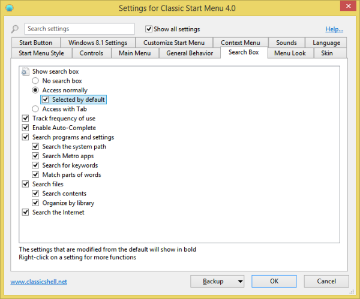
All the search-related settings are grouped together on one tab called "Search Box"
Classic Shell 4.0's search box is incredibly powerful now that it has Windows Search integration.You can even use standard keyboard shortcuts like Alt+Enter to open the Properties of any search result or Ctrl+Shift+Enter to open any search result as administrator. If you want to locate where an item is located, simply right click any search result and click "Explore". Tip: To increase the icon size of search results (for example, if you are using a touch screen), go to "Menu Look" tab in Classic Start Menu settings and change the "Small icon size" from 16 to any suitable size you want such as 20 or 24. Then exit Classic Start Menu by right clicking the Start button and start it again from C:\Program Files\Classic Shell\ClassicStartMenu.exe.What is searched:↑
In summary, Classic Shell uses its own fast search for finding apps and Control Panel settings. But it uses Windows 7/Vista Search for finding files (documents, pictures, music, videos and other files). As far as the Start Menu's Windows Search integration is concerned, this means that only indexed files will be searched (exactly like the Windows 7 Start Menu). For non-indexed searches, you must use Explorer. Also, Windows Search is used in the Classic Start Menu for finding Settings from the new Metro Settings app. Finally, the search box can pass your queries to Cortana on Windows 10. Here is a detailed explanation of how the search box works and what you can do to customize the behavior.The search box lets you search:
1. Program shortcuts inside Start Menu folders: The search finds program shortcuts (*.lnk files) from Start Menu folders (there are 2 of them - one at %appdata%\Microsoft\Windows\Start Menu and the other at %programdata%\Microsoft\Windows\Start Menu). Additionally, on Windows 8, Modern app shortcuts are also searched which are stored at %localappdata%\Microsoft\Windows\Application Shortcuts. Even if Windows Search indexing is turned off, programs will be searched.
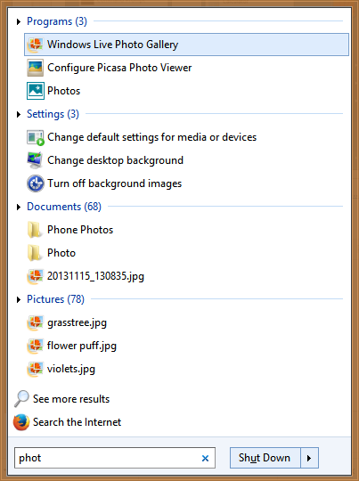
Unified search being performed for programs, apps, settings and files
If you want your own shortcuts (links) to be searched, copy-paste them inside the Start Menu or Programs folders. The search box tracks how many times which program was launched so frequently launched shortcuts rise to the top of the results.2. Program executables in system PATH: The search box is uniquely capable of searching executable programs (*.EXE, *.CPL, *.MSC) from folders included in system PATH environment variable. The system PATH is a value containing various folder paths where Windows looks when you type something at the command line. By default, the folders included in your system path which contain many useful EXEs are C:\Windows and C:\Windows\system32. To add any folder you want to the system PATH, open C:\Windows\system32\SystemPropertiesAdvanced.exe -> Environment Variables. Under System variables, edit the value of 'Path', add a \; after the last path and add your folder there. For example, if 'Variable value' is already:
...%SYSTEMROOT%\System32\WindowsPowerShell\v1.0\
then modify it to be
...%SYSTEMROOT%\System32\WindowsPowerShell\v1.0\;C:\Your Folder\
This will add that folder to the system path. Note that this path searching feature of Classic Start Menu also does not depending on Windows Search indexing.
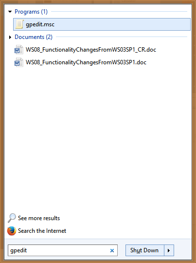
Path search feature of the Classic Start Menu speeds up finding EXEs and MSC files
Lastly, you can also run programs defined in "App Paths" key in the registry at: HKLM\SOFTWARE\Microsoft\Windows\CurrentVersion\App Paths.App Paths is a special registry key where applications are registered so they can be opened directly by typing their alias. For example, you can open Windows Media Player by typing wmplayer and pressing Enter because its full path in registered at the App Paths registry key. If you are a power user, you may want to create your own custom aliases in the App Paths registry. Look at this article to see how you can create custom aliases. Winaero's Win+R Alias Manager makes it easy to create aliases if you don't want to fiddle with the Registry.3. Settings: The search box can search the Control Panel settings virtual folders (there are also 2 of them - one which has a list of all the Control Panel applets and the other which has long textual descriptions of all settings/Tasks (shell:::{ED7BA470-8E54-465E-825C-99712043E01C}). This is the so called "GodMode" folder which also has a long list of keywords which also Classic Shell's Start Menu searches resulting in a very comprehensive ability to find any setting in Windows!
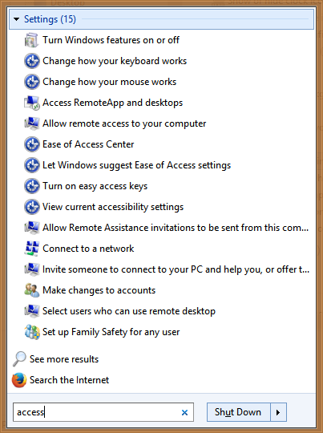
The Start Menu searches not only Windows settings but also their keywordsOn Windows 8 and above, Classic Start Menu also searches the Modern PC Settings folder. The desktop settings are also searched even if Windows Search indexing is completely turned off. Searching Metro settings requires Windows Search indexer to be turned on. There is a Windows Gadget to control the speed/priority of the Windows Search indexer.4. Indexed Files and contents of Libraries: The search box shows results from the Windows Search index. This index is a database so only the files included in this database by Windows will be returned in the search. This includes any file extension that Windows Search is capable of indexing and any folder which is included in the "Indexing Options" Control Panel. This is only available in Classic Shell 4.0 and later. Classic Start Menu's file search depends entirely on Windows indexing. If you stop the search service, programs and settings search will continue to work but file search will not. The desktop settings are also searched even if Windows Search indexing is completely turned off. Searching Metro settings requires Windows Search indexer to be turned on. There is a Windows Gadget to control the speed/priority of the Windows Search indexer.4. Indexed Files and contents of Libraries: The search box shows results from the Windows Search index. This index is a database so only the files included in this database by Windows will be returned in the search. This includes any file extension that Windows Search is capable of indexing and any folder which is included in the "Indexing Options" Control Panel. This is only available in Classic Shell 4.0 and later. Classic Start Menu's file search depends entirely on Windows indexing. If you stop the search service, programs and settings search will continue to work but file search will not.
To change which folders are indexed, open Control Panel -> Indexing Options -> click Modify, and add or remove locations as you want.You can include any important folders which you feel should be indexed. For example, on Windows 7, recent documents are searched by the built-in Start Menu but this feature got removed in Windows 8! So you can simply add the Recent documents folder to Indexing Options on Windows 8, so they are also searched. Add C:\Users\<your user name>\AppData\Roaming\Microsoft\Windows\Recent folder to the Indexing Options Control Panel so your recently opened documents are always indexed.
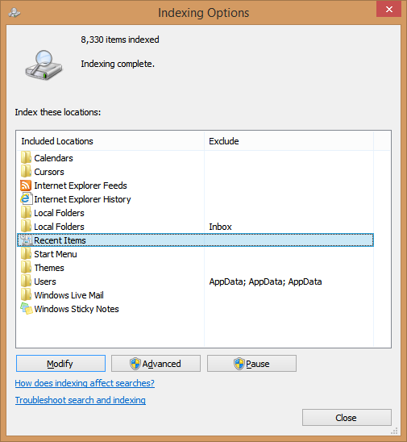
Indexing Options let you configure which locations and file extensions are indexed, and whether their full contents are indexed or only properties
To change which file extensions (file types) are indexed and the metadata/properties for which file extensions are indexed, click the Advanced button. For example, if you set only the DOC file extension to index Properties only, not Properties and File Contents, then the text inside the pages of all DOC documents won't be indexed. Note that this setting affects ALL files on your PC for that particular extension.
Instead, if you wish to turn off indexing the contents of a specific file in some specific folder (but want other files of that type to be indexed), just open the file's Properties, and on the General tab, click Advanced and uncheck the option "Allow this file to have contents indexed in addition to file properties". This checkbox toggles the 'index' attribute for a file, so you can opt out of indexing the contents of that specific file.
It is important to note that simply enabling this checkbox "Allow this file to have contents indexed...." is not enough to index the contents of a file or folder. The checkbox merely lets you opt out of/opt in to indexing. You must explicitly add a folder to Indexing Options or to a Library to get it indexed. Also this checkbox controls only whether the contents are indexed.
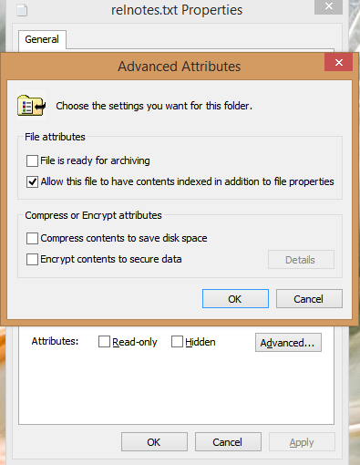
To include or exclude a single file's contents from indexing, set its Index attribute
Another thing to note is that all the local folders and files included in Windows Libraries are always indexed and searched. File search can search your emails (Windows Mail, Live Mail, Microsoft Outlook and the Windows 8 Mail app) as long as the folders where emails are stored are indexed by Windows Search or the protocol handler is installed (in case of Outlook). For searching Outlook stuff, note that only certain versions of Outlook (2010) and only on Windows 7 is a supported configuration. Outlook 2013 and Windows 8 broke this feature.
If you are facing the situation where you have a folder containing XYZ files that you want to search, or their contents but the Start Menu search does not return anything, then simply right click that folder and from the context menu, use the "Include in library" menu. Or you can open the folder in Explorer and from the Explorer Command Bar, click "Include selected folder in Library" and choose an appropriate Library to include it. In a few minutes, the file names and contents will be indexed.
Search Add-ons to expand what is searched (IFilters and Property Handlers):↑Microsoft made the search extensible in Windows. Windows Search is capable of indexing not just the file name but also the metadata/properties of files (in case of pictures, videos, documents etc) and their full contents (when the documents are not plain-text but in some binary format such as DOC or PDF). For Windows Search to be able to index the full contents and properties of more file formats, you need to install either iFilters and/or property handlers. Some programs like Microsoft Office automatically install iFilters as well as property handlers to index the contents and properties of the file types they handle. To search inside formats such as ZIP, RAR, CHM, HLP, CAB, PDF, you need to install additional free iFilters. Think of iFilters as search plugins which can extend the ability of your system to index and search the full content of binary file types. Similarly, to index and search the properties of many more file formats, you need to install property handlers. Property handlers tell Explorer more about a file type and allow it to show that information in the Details pane and other locations. For example, for Explorer to identify .FLV or .MKV as a video file type, you need a property handler for those formats.
Windows Search also supports search protocol handlers so for applications which use their own database formats such as Microsoft Office Outlook, Mozilla Thunderbird, Internet Explorer History, Lotus Notes etc, you need to install them too. Some protocol handlers are already pre-installed with Windows such as the ones for Sticky Notes, Offline Files and RSS feeds platform. Others such as Outlook are installed with Office.
Microsoft Office IFilters can be downloaded from here: http://www.microsoft.com/en-us/download/details.aspx?id=17062 (allowing indexing of Word, Excel, PowerPoint, OneNote, Publisher and Visio files)
You can download free iFilters for more formats from http://www.ifiltershop.com/. IFiltershop has free IFilters for CHM (Compiled HTML Help), DWF/DWG (AutoDesk formats), RAR, StarOffice/OpenOffice, ZIP and also notably, an XMP IFilter to index the XMP metadata of JPEG, PNG, GIF, PSD, AI, PS/EPS, SVG and AVI files.
The File Types tab of Advanced Indexing Options of Windows shows you which IFilters are installed. If some IFilter is already installed and correctly registered on your system to search the contents of some binary file type, the Advanced tab will show it. If you want some file extension to be indexed which you know is plain text (plain text files are ones which can be edited in Notepad), then just select that extension and choose Index Properties and File Contents. If that extension isn't in the list, add it and configure it to index contents.
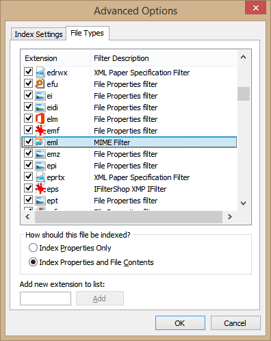
File Types and their associated filters in Advanced Indexing Options
As for property handlers, they are shipped with various desktop programs. Windows itself includes property handlers out-of-the-box for system files such as .EXE, .DLL, .LNK, .OCX, Font files (.TTF, .OTF), .Library-ms, .search-ms, .URL (Favorites), .EML (E-mail), common image formats (.JPG, .PNG, .BMP, .GIF), .XPS, a large number of media file formats (MP3, WMA, WMV, ASF, MPG, MP4, WAV, AVI, ADTS etc), and OLE compound documents (MSI, MSP, MSM, MST, PCP). Here is a comprehensive list of other desktop programs which install their own property handlers:
- Microsoft Office (commercial) includes property handlers for its formats. You can also install the Office Filter Pack which besides IFilters will install all the necessary property handlers for documents.
- Microsoft Camera Codec Pack (free) installs property handlers for RAW image formats.
- AudioShell 2.0 (free) installs property handlers for audio formats (3GP, AIF, AIFF, APE, ASF*, DSF, FLAC, M4A, M4B, M4P, M4V*, MP+, MP1, MP2, MP3, MP4*, MPC, OFR, OFS, OGG, SPX TTA, WAV*, WMA, WMV*, WV)
- Icaros (free) installs property handlers for some audio and video formats (MKA, MKV, OGG/OGV/OGM*, FLV, RM, AVI/DIVX, *APE, FLAC*, MPC*)
- dbPowerAmp Music Converter (commercial but shell integration is free) installs property handlers for audio formats (AAC, AIF, AIFC, AIFF, APE, *ASF, ASX, BWF, CDA, M2A, M4A, M4B, MID, *MKV, *MOV, *MP4, MP1, MP2, MP3, MPA, *MPEG, *MPG, OGG*, WAV, WMA *WMV)
- SageThumbs (free) and MysticThumbs (commercial) install property handlers for many image formats
- PDF-XChange Viewer installs a property handler and IFilter for PDF files
- Property handler and IFilter for DjVu
- Property handler for MOBI/AZW/PRC ebooks
- File Meta (http://filemeta.codeplex.com/) exposes the NTFS Alternate Data Stream of a file which contains summary info as a Windows Search property. For any file format which doesn't have a property handler, you can associate it with File Metadata's property handler so that the information in the file type's Summary stream can be indexed and searched by Windows Search.
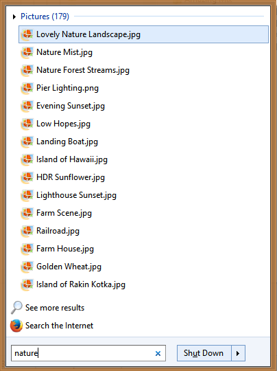
IFilters allow indexing full contents, Property handlers allow indexing metadata properties. Your search results will be more comprehensive after installing iFilters and Property Handlers.
The more iFilters and property handlers you have installed, the more powerful Classic Shell's Search box gets. For 64-bit Windows, you must install 64-bit iFilters and 64-bit property handlers, 32-bit iFilters and property handlers will not work on 64-bit Windows.
If a particular file type has both an IFilter as well as a Property handler, then Windows Search's database will contain data extracted from both of them.
Tip: You can see which IFilters you have installed using NirSoft's SearchFilterView. SearchFilterView can also be used to register new file extensions with IFilters installed on your system or change IFilters registered for a file type, for example, for a file extension such as .XML) Windows uses the XML IFilter but you may want to associate it with the plain-text filter. Installed property handlers can be viewed using Nirsoft ShellExView or directly in the Registry at HKEY_LOCAL_MACHINE\SOFTWARE\Microsoft\Windows\CurrentVersion\PropertySystem\PropertyHandlers.
Special Features:↑- See results in place: You can press Enter on each category header of search results to expand it and see more results. Press Enter again to un-expand that category. Click on the category name (e.g. Documents, Music) or press Ctrl+Enter to show all results in File Explorer.
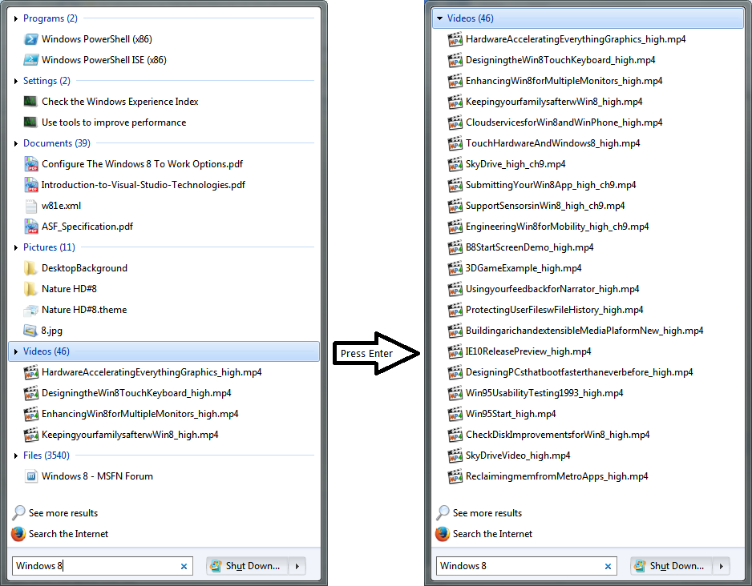
Expand categories by pressing Enter, press Ctrl+Enter to open results in Explorer
- Auto-complete: You can type paths into the search box like the Run dialog. For example, C:\Program Files or \\Windows-PC\ . It has auto-complete functionality.
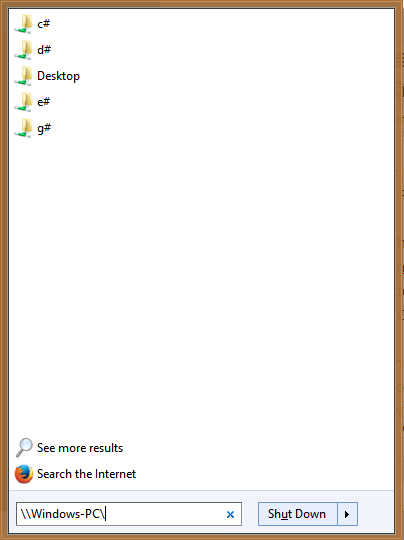
Browse and open files / folder paths using autocomplete- Substring matches: Classic Shell's search box supports partial word matches. So you can type: torrent instead of µTorrent. Or RAR instead of WinRAR. Fox instead of Firefox. Or you can type the beginning few letters of each word: e.g. w m p for Windows Media Player, or rem conn for Remote Desktop Connection.
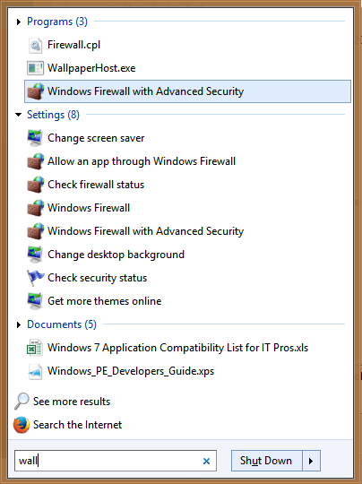
The Start Menu does substring matches if 'Match parts of words' setting is on- Wildcard filtering: The search box supports wildcard filtering so you could also type this into the Start Menu's search box: C:\YourFolderContainingEXEs\*.exe or C:\YourFolderContainingEXEs\w*.dll and so on. You can also use environment variables. e.g. %tmp%\*.log or %windir%\system32\*.msc
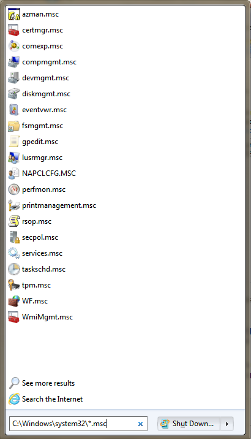
Filtering files by extension in a specific path
- Web search without privacy risks: You can type anything into the search box and then select "Search the internet". This opens your default web browser and performs a web search. This is better than passing every query you type directly to web search engines or opening web search results outside the browser.
Windows Search Advanced Query Syntax:↑The Classic Shell 4.0 Start Menu supports the same powerful Advanced Query Syntax (AQS) that Windows Explorer search supports. Not only that but you will find the speed and responsiveness of Classic Shell's Start Menu much faster than the Windows Start Menu or Start screen. Unfortunately, the main problem with the AQS is that it's too long and complex to remember. Also, the Start Menu doesn't yet autocomplete the properties or their values, like how Windows 7 and later Explorer populates the values once you type the property. Nevertheless, here are some of the useful properties you may use to search in the Start Menu:
For searching generic files:
******************************
you can either type the name directly or use operators such as AND, OR and NOT(operators must be used in UPPERCASE).
NOT or use the minus sign — to exclude items (e.g #1): *.jpg -Nature (e.g. #2): kind:music NOT:*.wav
OR for results matching x OR y (e.g. Windows 7 OR 8)
AND for both (e.g. Windows 7 AND 8)
Enclose results in double quotes for exact phrase search (e.g. "Classic Shell")
or filter by any of these properties:
size:empty,tiny,small,medium,large,huge,gigantic
size:<=5MB
size:>=300MB
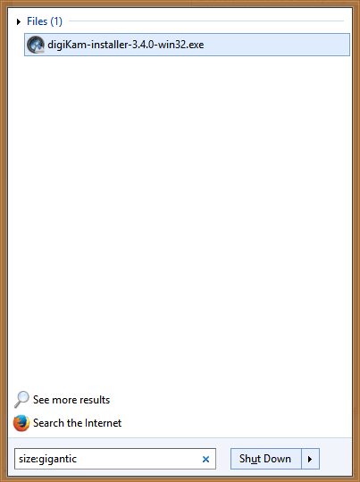
Type size:gigantic to find all huge files from your indexed files.
kind:contacts, communication, email, im, docs, music, song, playlist, pics, pictures, videos, movie, folders, tasks, notes, calendar, programs, link, tv, journal, feed
type:
contenttype:
ext:
folder:
folderpath:
keywords:
tags:
attributes:
owner:
EncryptionStatus:Encrypted/Unencrypted
IsEncrypted:Encrypted/Unencrypted
url:
Date-related properties:
***************************
before:MM/dd/yyyy
after:MM/dd/yyyy
date:today, yesterday, thisweek, lastweek, thismonth, lastmonth, thisyear, lastyear
date:Sunday
date:January
modified:last week
created:
accessed:
documents:
**************
author: or authors:
title:
subject:
lastsavedby:
comments:
slides:
lastprinted:
CharacterCount:
lastsaved:
LineCount:
Pages:
ParagraphCount:
WordCount:
Protected:No/Yes
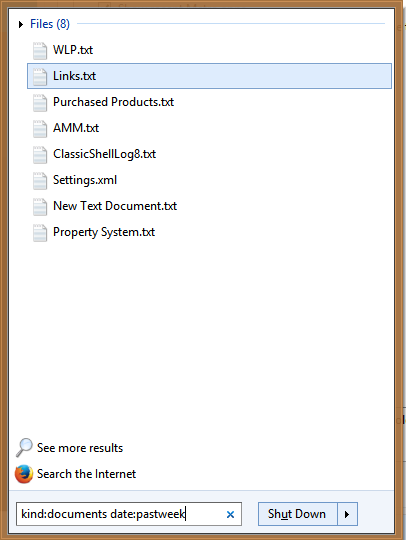
Search only for documents modified in the past week using kind: and date:
music:
*******
album:
genre:
bitrate:>128kbps
duration:0:00
length:
year:>1977
track:10
lyrics:
rating:
composer:
conductor:
contacts:
**********
birthday:tomorrow
anniversary:yesterday
photos:
********
orientation:landscape
cameramake:nikon
datetaken:MM/dd/yyyy
dimensions:8x10
width:1600
height:1200
Bitdepth:
Compression:
HorizontalResolution:
VerticalResolution:
Aperture:
MaxAperture:
CameraModel:
DigitalZoom:
FlashMode:
ExposureTime:
ExposureBias:
Lightsource:
FocalLength:
ISOSpeed:
MeteringMode:
PeopleTags:
ShutterSpeed:
WhiteBalance:
ExposureProgram:
F-Stop:
ProgramMode:
Saturation:

Finding photos by camera make/manufacturer
video:
********
EncodedBy:
Video Compression:
Director:
DataRate:
FourCC:
Frameheight:
Framewidth:
framerate:
TotalBitrate:
programs:
************
Program:
company:
copyright:
programname:
linktarget:
Email:
*******
hasattachment:no/yes
is:attachment
attachment:
importance:high/normal/low
from:
to:
cc:
bcc:
isdeleted:no/yes
title:
hasflag:no/yes
isread:read/unread
This is not a complete list of properties. For a mostly complete Advanced Query Syntax, see this PDF document: http://www.donationcoder.com/forum/index.php?action=dlattach;topic=18016.0;attach=40673 or this page: Windows Search: Advanced Search Techniques
Search Providers:↑
Classic Start Menu allows you to add Search Providers, which you can use to pass on any text you type into the search box to other programs. It can be passed on to any program that accepts text at the command line - your favorite desktop search tool or even web search in your default internet browser. The search provider functionality is a replacement for the separate search box which was removed from most web browsers like Internet Explorer 9 and up. For Classic Styles of the menu, Search Providers can be registered by adding sub-items for the Search box from the Customize Start Menu tab.How to add a search provider for Classic styles:This can be explained with an example. Suppose you want to create a search provider for Everything, which is a very good third party desktop search tool:
● For Classic styles of the Start Menu, go to the Customize Start Menu tab in Classic Start Menu settings.
● Insert a custom item as a subitem for the search box (Custom is the last item in the right column). Drag the custom item over the Search box in the left column.
● Double click this custom item to edit it and in the Command field, type:
"C:\Program Files\Everything\Everything.exe" -search "%1"
● Give it a name (Label), icon and tip if you want. Click OK twice to save all settings.
The result will be what the screenshot below shows:

Now when you type something in the Start Menu search box of Classic style, and click "Search using Everything", it will pass on the search box's contents to a new window in Everything. If you define the Label using an ampersand (&) character e.g. "Search using &Everything", then pressing Alt+E will directly pass it to Everything. The ampersand ('&') defines the keyboard shortcut. %1 is replaced by the contents of the search box. If you use %2 it will be replaced by the url-style encoded search text.
Here are a few examples:● Search with Cortana (Windows 10 only):ms-cortana://StartMode=MyStuff&q=%1● Search with Agent Ransack: "C:\Program Files\Agent Ransack\AgentRansack.exe" -r -f "%1"
● Search with Everything: "C:\Program Files\Everything\Everything.exe" -search "%1"
● Search with Google:http://www.google.com/#q=%2● Search with Bing:http://www.bing.com/search?q=%2● Search with Google and directly open the first search result (as if you pressed the button "I'm Feeling Lucky"):http://www.google.com/search?btnI=I%27m+Feeling+Lucky&q=%2
● Search Google Images directly from Start Menu: http://images.google.com/images?q=%2&hl=en
● Search Wikipedia directly from the Start Menu:http://en.wikipedia.org/w/index.php?title=Special:Search&search=%2● Search Google News directly from the Start Menu: http://www.google.com/search?tbm=nws&q=%2
● Search only English pages on Google: http://www.google.com/search?hl=en&as_qdr=all&q=%2&btnG=Search&lr=lang_en● Search on Google Translate:https://translate.google.com/#auto/en/%2
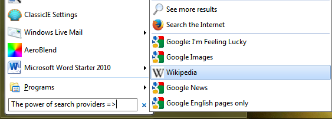How to add a search provider for Windows 7 style:Starting with Classic Shell 4.2.5, Search Providers are also supported in the Windows 7 style of the Start Menu.● For Windows 7 style of the Start Menu, go to the Customize Start Menu tab in Classic Start Menu settings.● Insert a custom item by pressing the Insert key.● Double click this custom item in the Icon column to edit it and in the Command field, type the command of your custom search including %1 or %2 which will be substituted by the actual search terms.● Give it a name (Label), icon and tip if you want. Click OK twice to save all settings.So just like classic styles, the %1 in the Command string is replaced by the contents of the search box. If you use %2, it will be replaced by the url-style encoded text (especially useful for sending your search query to websites). If a Custom item's Command string in Windows 7 style has %1 or %2, it is considered a Search Provider and will show up during searches at the bottom of the results. Exactly like Classic styles, you can use this functionality to add any website, or an external program with the appropriate parameters so the Start Menu search box contents will be passed on to this Search Provider.Here is a screenshot of some Search Providers added in Windows 7 style: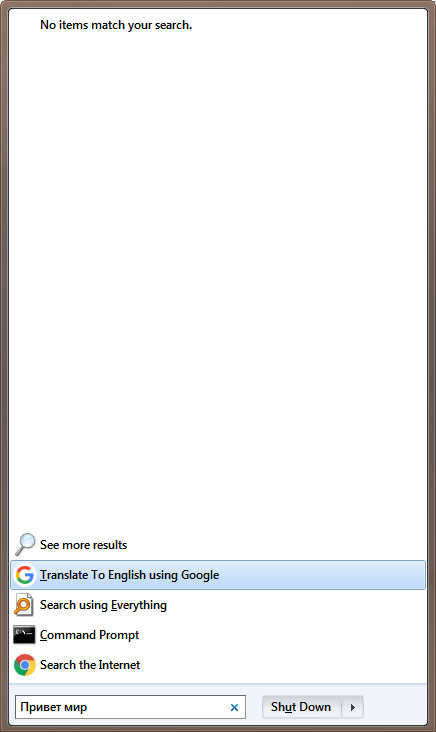
This example screenshot shows how you can put any text in a foreign language and have it translated to a language you can read by adding a Search Provider for Google Translate. The string for Google Translate is in the examples list above. You can pass on the search text to the "Everything" program, or to the Command Prompt to run it as a command. You can add Search Providers to search on websites like Google Images, Google News, Wikipedia, eBay, Amazon, IMDb, YouTube, DuckDuckGo, Twitter, Yahoo etc. If the address bar changes on the web when you search to reflect your search strings, it can be added as a Search Provider. Any desktop apps which have a way to search or find from the command line should also work.Touch Keyboard:↑The Windows Touch Keyboard can either be docked or it can float on top of apps. Whether the keyboard floats or is docked can be controlled via a button to the left of the Close (X) button on the keyboard. When the Touch keyboard is docked,the Start Menu has the ability to move itself to display above the touch keyboard so that the search field and search results do not go behind the keyboard. This is possible starting with Classic Shell 4.2.3.However, one of the disadvantages of using the touch keyboard in docked mode is that application windows get resized and re-positioned. When the keyboard disappears, they are not always restored to their original size and position. To prevent this, some users prefer to always use the keyboard in floating mode. Unfortunately, in floating mode, the Touch keyboard will appear on top of the Start Menu search box/search results. When you are using a touchscreen and a floating touch keyboard, you can switch to the Classic style or Classic with two columns style of the Start Menu and move the Search box to the top of the menu. To do this, open the Customize Start Menu tab in Start Menu Settings and drag the Search Box item below the COLUMN BREAK. Then click OK. Thereafter, when you tap your Start button, you will be able to search without the touch keyboard obscuring the search box or search results.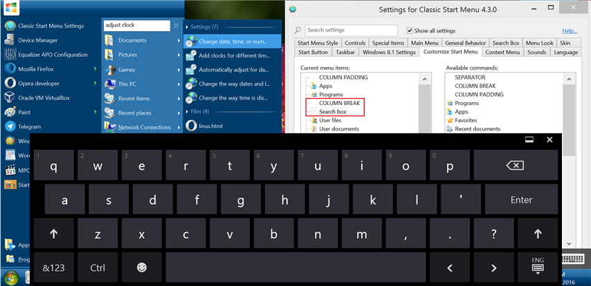
So you can see that Classic Shell Start Menu search functionality is very powerful and can be used to find and launch anything. If you have any questions about search, you can ask in the forums.
_________________ Links to some general topics:● Compare Start Menus ● Read the Search box usage guide.
I am a Windows enthusiast and did Classic Shell's testing and usability/UX feedback.
|
|